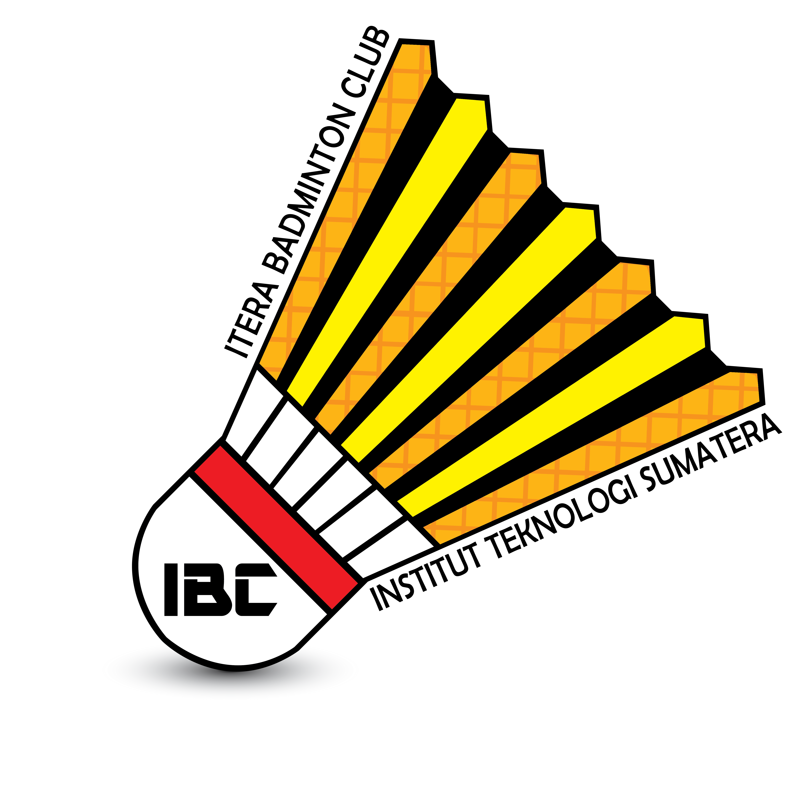

LOGO IBC

PENDIRI IBC
IBC diinisiasi oleh mahasiswa Institut Teknologi Sumatera pada tahun 2015 akhir.
inisiatornya sendiri terdiri dari 5 orang mahasiswa yaitu :
- Samuel Gultom (Teknik Geomatika 2015)
- Lestari Panduwinata (Perencanaan Wilayah dan Kota 2015)
- Johan Efendi (Teknik Sipil 2015)
- Alhamidi (Perencanaan Wilayah dan Kota 2015)
- Agung Bhakti P. (Teknik Geomatika 2015)